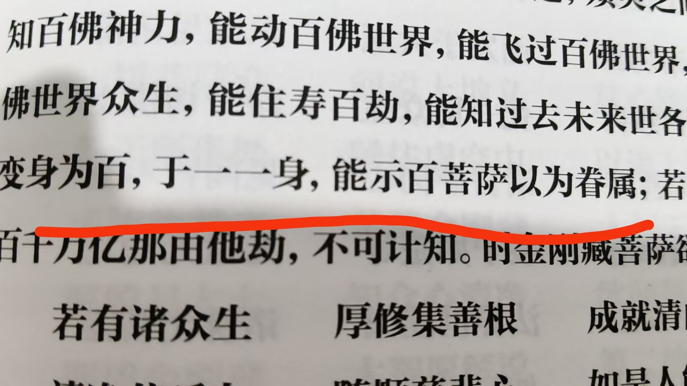

20260907眷属，就是分身化身
修炼修行风水布局 原始对话记录
眷属，就是分身化身
经里说的很明白
不可能带着成千上万七大姑八大姨
明白了
菩萨十地，是以分身多少决定层级的
终于活明白了
以后，我就看学生们多少分身，定层级
[憨笑][憨笑][憨笑][憨笑]
半生，只知道佛家五眼六神通
这里明确指出了，佛家十眼
[呲牙][呲牙][呲牙]
如此多的知识，真是宝藏啊
知之为知之，不知为不知
以前，确实不知道后五眼
更高
实事求是
越学越谦虚
我随师修炼近五十年，仍觉得只是皮毛
现在的大师，讲出来不是说真理，直接就是天理
吃芥末瞎眼
[呲牙][呲牙][呲牙][呲牙]
成了笑话，这样说，不造口业
外出风水 开车要两个小时
好在后半程福主开车
不过，确实吃大蒜，神仙佛祖小鬼都嫌味大，不靠近
所以，我感觉身边不干净，就吃大蒜
[憨笑][憨笑][憨笑][憨笑]
真的管用
以下为编者整理的主题文章
编者整理 · 主题文章
眷属即分身化身：十地层级的一种说法
一句话结论：本页提出"眷属就是分身化身"，并据此说菩萨十地以分身多少定层级；同页还提到"佛家十眼"，称超出常说的"五眼六神通"。编者按术语转述，属修习记录，不作功效承诺。
一、本页是什么
本页很短，核心是一句判语加一条推论：
眷属，就是分身化身。……菩萨十地，是以分身多少决定层级的。
作者据此说"以后就看学生有多少分身来定层级"。
二、"眷属就是分身化身"怎么理解
传统佛经里，"眷属"本指围绕佛菩萨的听众、从众。本页把它另解为"分身化身"：经文里动辄"无量眷属"，若按字面理解为"成千上万亲朋好友"显然不合，于是用"分身"来解释——即一位主体化现出的众多"身"。这是一家之言式的读法。本页还夹了一句题外话——"吃大蒜，神仙佛祖小鬼都嫌味大，不靠近""身边不干净就吃大蒜"，属民俗层面，与"眷属即分身"的主线无关。
三、十地与分身的关系
| 说法 | 内容 |
|---|---|
| 菩萨十地 | 大乘修行从初地到十地的阶位 |
| 本页推论 | 以"分身多少"对应"十地层级" |
| 判断方式 | "看学生有多少分身来定层级" |
本页把抽象的"十地"换成了可被"计数"的指标，属该体系的形象化操作。作者由此主张：判人修为不看他讲得如何，而看"分身"多少——这与《分身多少决定十地层次》一篇的说法前后呼应。
四、五眼六神通与"十眼"
本页另提到一层知识：
- 常说佛家有"五眼"（肉眼、天眼、慧眼、法眼、佛眼）与"六神通"；
- 本页称经典里还"明确指出佛家十眼"，作者自述"以前确实不知道后五眼"。
它把"多出来的眼"当作更高层次，并说"越学越谦虚"。此处仅作记录转述，未展开十眼明细。
五、常见问题
问："眷属＝分身"是佛经原意吗？ 这是本页的一种解读，与传统"眷属"词义并不相同，读者宜分清。
问：真的能"数分身"吗？ 这是该体系的说法，没有可验证的标准，本站不承诺功效。
问："十眼"是通说吗？ "五眼六神通"是常见说法；"十眼"见于此记录，属其内部提法。
六、提醒
- 两句话记牢：眷属即分身化身、分身多少定十地；
- 与《分身多少决定十地层次》《三家相见与元婴呈现》同属一组；
- 按传统文化资料看待，请理性判断。
说明与免责：本站为民间修炼、民俗文化与传统文化资料的整理与记录，内容源自传承者口传与个人修习体会，仅供文化交流与研究参考，不构成医疗、健康、投资或任何功效承诺。所述内容属传统术数范畴，请理性看待；如身体不适，请及时就医。请遵守法律法规与公序良俗。